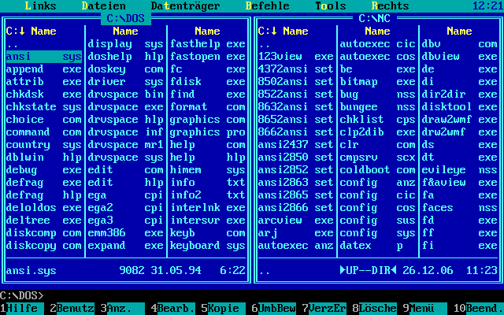

Die Nerd Enzyklopädie 5 - Gesehen, gelacht, F8
Dieser fröhliche Ausspruch geht auf eine populäre Software zurück bzw. auf eine ganze Software-Familie: Die alternativen Dateimanager. Einer ihrer ältesten und wichtigsten Vertreter ist der sagenumwobene Norton Commander. Jeder Nerd sollte bei diesem Anblick feuchte Augen bekommen:

Der Norton Commander wurde 1984 unter dem Namen VisualDOS (VDOS, DOS steht für Disc Operating System) von John Socha entwickelt und später von Peter Norton Computing vertrieben. DOS war seinerzeit ein Betriebsystem, das ohne grafische Benutzeroberfläche auskam. Für viele Anwender*innnen heutzutage vermutlich eine seltsame Vorstellung.
Mithilfe des Norton Commanders konnte man nicht nur Dateioperationen bequem durchführen, sondern hatte auch andere nützliche Funktionen an zentraler Stelle zur Verfügung. Selbst als mit Microsoft Windows eine grafische Benutzeroberfläche zur Verfügung stand, galt der Norton Commander noch als willkommene Alternative zum hauseigenem und etwas sperrigen Dateimanager. Der Norton Commander wird seit 2000 nicht mehr weiterentwickelt. Mittlerweile gibt es zahlreiche Ableger und Klone für alle gängigen Betriebssysteme und sogar für Smartphones. Der Total Commander von Christian Ghisler dürfte wohl zum bekanntesten Vertreter dieser Gattung gehören.
Wie dem auch sei: Dateien und Ordner ließen sich schnell über die Funktionstaste F8 löschen. Ein Tastenkürzel, das von den meisten Norton-Commander-Klonen weiterhin unterstützt wird. Wenn man vom Unterhaltungswert eines Spiels, einer Software oder eines Videos enttäuscht war, wurde es so einfach vom Computer entfernt. So entstand der Ausruf „gesehen“ (das Spiel getestet, das Video angesehen, …) „gelacht“ (im Sinne einer abwertenden Beurteilung) und „F8“ (Löschen!).
Gesehen. Gelacht. F8…